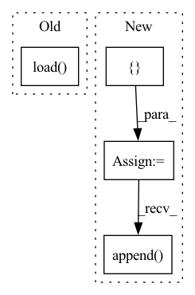

Pattern ID :3488
Before Change
// backtest
par = PortAnaRecord(recorder, port_analysis_config)
par.generate()
analysis_df = par.load( par.get_path("port_analysis.pkl"))
print(analysis_df)
return analysis_df
After Change
strategy = EnhancedIndexingStrategy()
dates = scores.index.get_level_values(0).unique()
alphas = []
current = pd.DataFrame()
gap_between_next_trade = 0
for date in tqdm(dates):
if gap_between_next_trade == 0:
score_series = scores.loc[date]
alpha, current = strategy.update(score_series, current, date)
alphas.append( alpha)
gap_between_next_trade = trade_gap
else:
gap_between_next_trade -= 1
In pattern: SUPERPATTERN
Frequency: 3
Non-data size: 4
Instances Fragment ID: 13388815
Project Name: microsoft/qlib
Commit Name: 2bff6eb78120b8f3fc7aac12267d1e37c847ae0f
Time: 2021-03-04
Author: cy@unitive.tech
File Name: tests/test_enhanced_indexing.py
M Class Name: AnonimousClass
N Class Name: AnonimousClass
M Method Name: backtest_analysis(1)
N Method Name: backtest_analysis(2)
M Parent Class:
N Parent Class:
M File Name: tests/test_enhanced_indexing.py
N File Name: tests/test_enhanced_indexing.py
M Start Line: 136
M End Line: 158
N Start Line: 226
N End Line: 248
Before Change
load_epoch = np.argmax(metrics["accuracy"])
load_name_tmp = "ep_" + str(load_epoch) + ".m"
self.model.load_state_dict(
torch.load( self.tmp_path + load_name_tmp) )
print("load epoch={} model state".format(load_epoch))
if lr <= 0.9 * 1e-5:
breakAfter Change
os.makedirs(self.tmp_path)
metrics = {}
metrics["accuracy"] = []
metrics["loss"] = []
train_total_batch = len(train_dataloader.dataset) / \
train_dataloader.batch_size
eval_total_batch = len(eval_dataloader.dataset) / \
eval_dataloader.batch_size
lr = self.config["learning_rate"]
for epoch in range(self.config["max_epoch"]):
self.model, avg_loss = self.run(
train_dataloader, self.model,
self.config["learning_rate"], self.config["clip"],
train_total_batch, self.config["verbose"])
print("==>Train Epoch:{:0>2d} Loss:{:.4f} learning_rate:{}".format(
epoch, avg_loss, lr))
// eval stage
avg_eval_acc, avg_eval_loss = self._valid_epoch(eval_dataloader, self.model,
eval_total_batch, self.config["verbose"])
print("==>Eval Acc:{:.4f}".format(avg_eval_acc))
metrics["accuracy"].append(avg_eval_acc)
metrics["loss"].append( avg_eval_loss)
if self.config["hyper_tune"]:
// use ray tune to checkpoint
with tune.checkpoint_dir(step=epoch) as checkpoint_dir:
path = os.path.join(checkpoint_dir, "checkpoint") Fragment ID: 13388816
Project Name: libcity/bigscity-libcity
Commit Name: 022010c6ffc7ff440e276127d6e6341751e03d69
Time: 2021-04-14
Author: 33283819+WenMellors@users.noreply.github.com
File Name: trafficdl/executor/traj_loc_pred_executor.py
M Class Name: TrajLocPredExecutor
N Class Name: TrajLocPredExecutor
M Method Name: train(3)
N Method Name: train(3)
M Parent Class: AbstractExecutor
N Parent Class: AbstractExecutor
M File Name: trafficdl/executor/traj_loc_pred_executor.py
N File Name: trafficdl/executor/traj_loc_pred_executor.py
M Start Line: 24
M End Line: 74
N Start Line: 33
N End Line: 71
Before Change
data_path (list): path to pickle file.
with open(data_path, "rb") as data_file:
data = pickle.load( data_file)
self.data = [[torch.from_numpy(u).cuda() for u in s] for s in data]
self.seg_len = seg_len
self.n_uttrances = n_utterancesAfter Change
assert os.path.isdir(data_dir)
self.data = []
self.n_uttrances = n_utterances
self.seg_len = seg_len
for data_file in os.listdir(data_dir):
data_path = os.path.join(data_dir, data_file)
raw = pickle.load(open(data_path, "rb"))
data = [torch.from_numpy(d) for d in raw if len(d) > seg_len]
if len(data) < n_utterances:
continue
self.data.append( data)
def __len__(self):
return len(self.data)
Fragment ID: 13388817
Project Name: yistlin/dvector
Commit Name: 5e47d5f6e72c99fbd81923da2a611ae87d439032
Time: 2020-03-28
Author: yishen992@gmail.com
File Name: modules/utterances.py
M Class Name: Utterances
N Class Name: Utterances
M Method Name: __init__(4)
N Method Name: __init__(4)
M Parent Class: Dataset
N Parent Class: Dataset
M File Name: modules/utterances.py
N File Name: modules/utterances.py
M Start Line: 18
M End Line: 23
N Start Line: 20
N End Line: 34